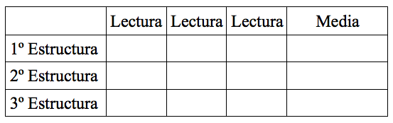

En este proyecto el alumno creará un simulador de terremotos, donde pondrá a prueba 3 estructuras y mediante la observación del experimento sacará ciertas conclusiones.
Veremos una nueva forma de unir el motor con una plataforma para que transforme ese movimiento circular del
motor en un movimiento lineal en la plataforma.
También aprenderemos a programar la velocidad del motor para que vaya creciendo poco a poco, como si fuera un
terremoto.
Por otro lado, con las conclusiones sacadas en base a las extructuras probadas, tendremos que hacer una
estructura con las piezas de las tres estructuras que sea capaz de resistir el terremoto por completo.
• Rellenar una hoja donde ira anotando en que nivel de intensidad se caen las estructuras.
Se harán un mínimo de 8 pruebas por estructura.
La hoja será proporcionada por el profesor y tendrá la siguiente forma:

• Una vez finalizadas las pruebas, el alumno debe responder a las siguientes preguntas:
- ¿Cuál es la estructura mas resistente?
- ¿Cuál es la estructura mas débil?
• Terminado todo esto, se propone al alumno construir una estructura que nunca se caiga, ni siquiera en la
intensidad 10.
Esta nueva estructura tiene que estar formada por el conjunto de piezas de las otras tres estructuras.